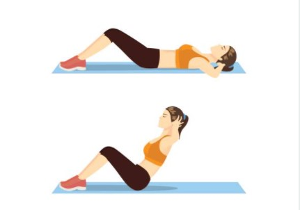
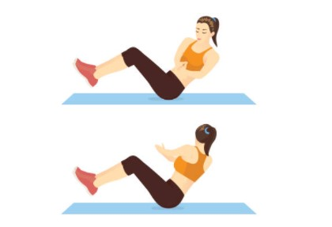
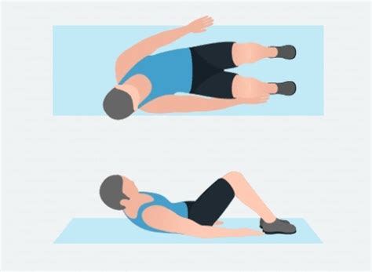
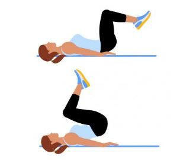

Belly Exercises
Sit Up
- Start by lying on your back with your knees bent.
- Put your fingertips on the back of your ears.
- Lift your torso up as close to your thighs as possible.
- Lower your torso down to the floor so you’re back in the starting position
- Do 3 sets of 10-15 reps.
This exercise should be done 2-3 times a week.
Russian Twist
- Place a mat or towel on the floor. Elevate your upper body.
- Twist. With your arms extended in front of you, twist your torso to the right side. Twist until your arms are parallel to the floor. Hold the position for a second or two and breathe out.
- Try to do 3 sets of 8-12 reps.
Don't use any weights when you first start doing Russian twists.
Crunch
- Lie on your back on an exercise mat.
- Bend your knees so your feet are flat on the floor.
- Cross your arms behind your head.
- Lift your shoulder blades off of the mat with a smooth, controlled motion.
- If the exercise is too easy pull your legs to your chest at the same time.
- Do 5 sets 45 seconds
This exercise should be done 4 times a week.

Hollow Hold
- Lie on your back, with your arms and legs straight out.
- Crunch your abdominal muscles inward, as if you were trying to suck your belly button to the floor.
- Raise your arms, legs, and upper back off the floor, creating a “smiley face” with your body.
- If the movement is too difficult or you start to feel it in your lower back, bend the legs to make it easier.
- Do 3 sets 20 - 30 seconds
You can combine this exercise good with crunches.

Heel Touch
- Lie down on a mat. Kee your legs flexed, feet wider than shoulder-width apart, and flat. Keep your hands by your side, chin up, shoulders relaxed, and core engaged.
- Bend sideways and try to touch your right heel with your right hand.
- Bend toward the other side and try to touch your left heel with your left hand.
- Do 3 sets of 20 reps. Take a 20-second break before moving on to the next exercise.
Do not place your feet too close to your hips.
Reverse Crunch
- Lie flat on your back with your arms by your sides, palms on the floor. Make sure your abs are drawn in and your legs and feet are together.
- Without moving your upper body at all, raise your hips and pull your knees towards your chest, bending them in the process.
- Return to the starting position to complete one repetition.
- Try to do 3 sets of 8-12 reps.
Keep your head in line with your neck and spine.
Hindu Pushups
- Get into a starting push-up position.
- Raise your backside into the air.
- Inhale deeply.
- Bend your elbows and lower your chest.
- Arch your lower and upper back.
- Straighten your arms and look up.
- Return to the starting position.
You must strech before doing Hindu push up.